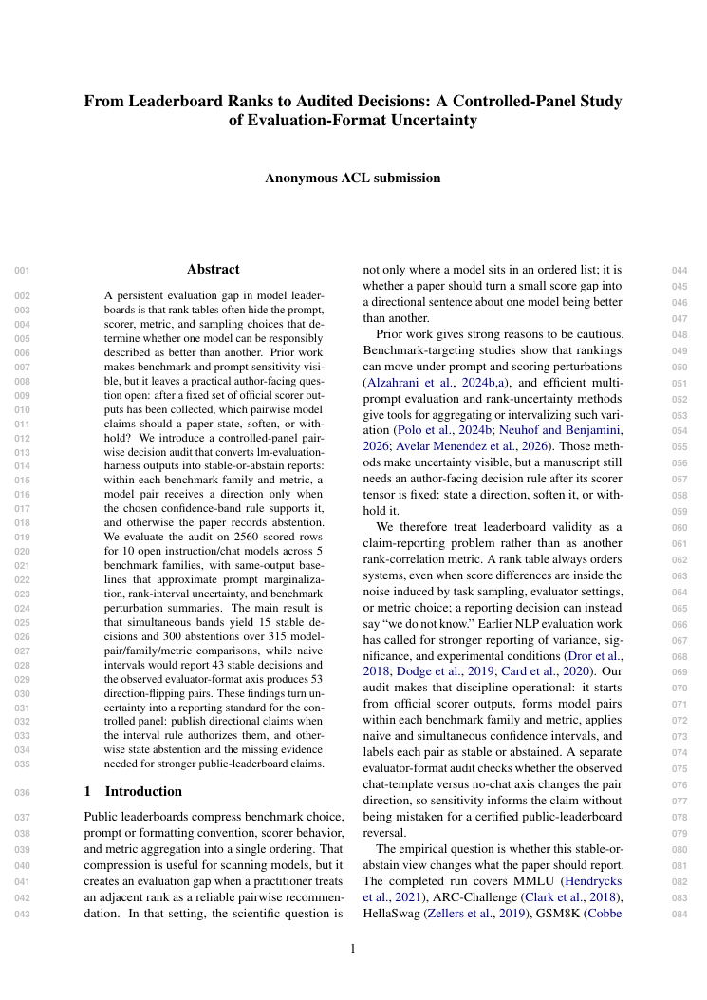
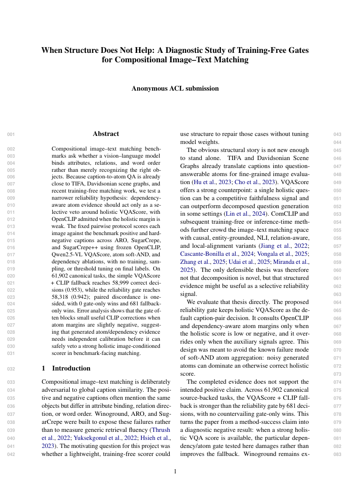
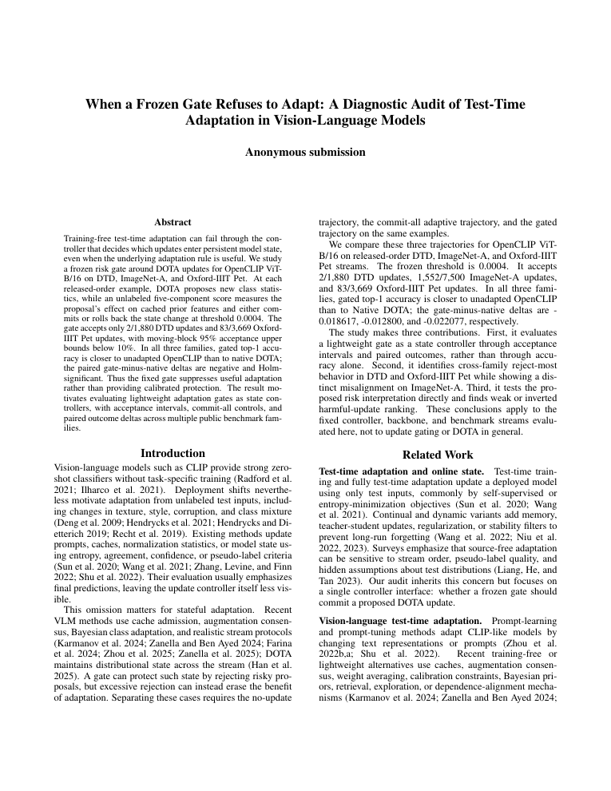
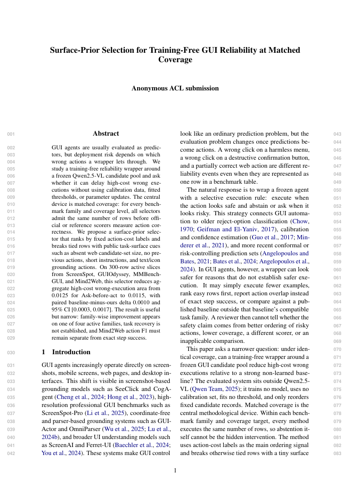
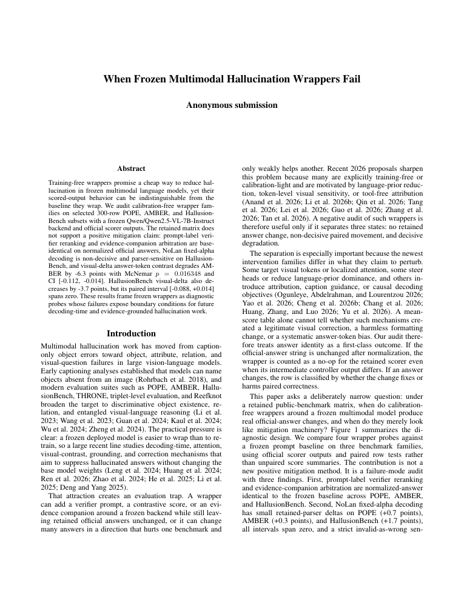
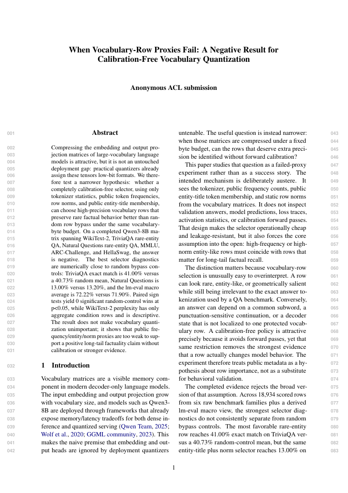

Six completed manuscripts · real PDF first pages
Scientific result on each card · Argus production process below

Evaluation reliability
Audited leaderboard decisions
15 stable · 300 abstained

Vision--language matching
Compositional matching gate
0.953 fallback > 0.942 gate

Test-time adaptation
Frozen adaptation gate
2 / 1,880 DTD updates

Multimodal agents
GUI reliability at matched coverage
0.0125 → 0.0115 risk area

Multimodal hallucination
Frozen hallucination wrappers
15 cells · 4,500 rows

Model quantization
Vocabulary-row quantization proxies
0 significant wins vs random